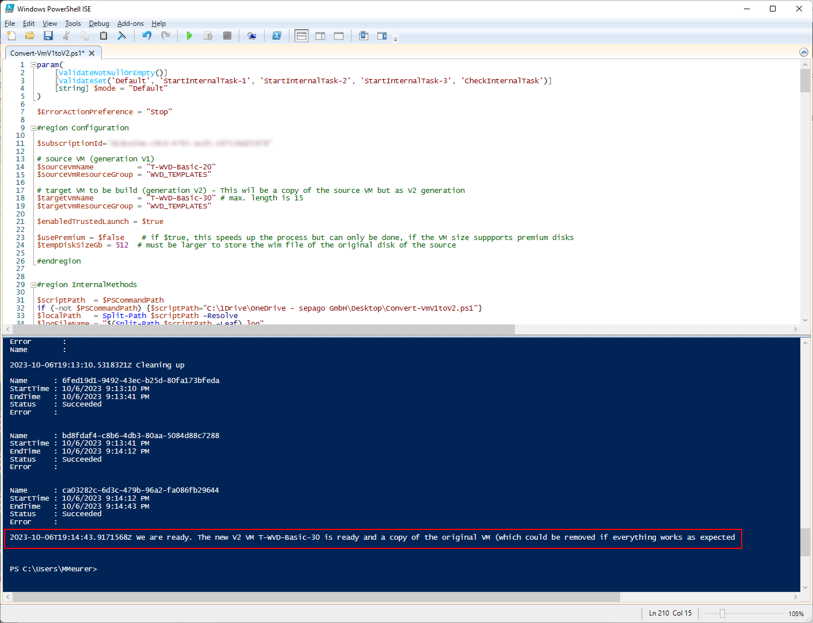

Microsoft has provided different VM sizes over the last years and also introduced the VM Generation V2 at the end of 2019. V2 VMs are different from V1 VMs and have the following advantages:
- UEFI based (no longer bios-based)
- Enhanced OS support
- Faster boot and disk support
- Advanced Security Features, like Secure Boot, which ensures the integrity of the boot process, and BitLocker encryption, which enhances data protection
Today, I expect that the most deployed VMs are V2, but I still see older V1 versions - including in my own environment. For example, I have several Golden Masters for Azure Virtual Desktop running Windows 10 22/h2 Multi-User. We still see V1 types because of the missing simple migration path. There is no native way in the Azure Portal to do this.
While I wanted to upgrade my Windows 10 Golden Masters to Windows 11, I came to the point of discovering that Windows 11 needs a V2 generation VM (for upgrading, trusted launch, vTPM, and secure boot must also be enabled).
After some research, I figured out that this is really not simple. I found a good blog post from Charbel Nemnom, who provides a step-by-step solution. The solution is still complex, so I decided to write a PowerShell script to handle this complex process more easily.
How does it work
We have our V1 virtual machine we want to convert. Instead of converting, we are building a new virtual machine (V2) with the converted OS disk of our V1 VM. So, in the end, we have two identical VMs: The original V1 VM and the V2 VM. If anything doesn’t work, we still have our original VM.
But takes some time, and the full process takes hours (for the script).
After configuring the script, the script enters the following steps:
- Deallocates the V1 VM
- Creates the new V2 VM with the same size in the same network, optional with trusted launch, secure boot, and vTPM
- Makes a snapshot of the V1 OS disk and, from the snapshot, a cloned OS disk (still V1)
- Creates an empty V2 disk with the same size and type as the V1 OS disk(this disk is supposed to be our converted OS disk)
- Attaches the empty V2 disk and the cloned V1 OS disk to the new V2 VM
- The script runs itself on the V2 VM
- Preparing the partitions of the attached disks
- Formatting the partitions
- Capturing the cloned V1 OS partition using DISM (that takes some time; in my last conversion, it took nearly 4 hours)
- Apply the captured image to the prepared partition of the empty V2 disk
- Write the UEFI partition of the formerly empty V2 disk
- Deallocates the V2 VM
- Detach the attached disks
- Swap the OS disk with the no longer empty V2 disk (the now converted OS disk of the V1 VM)
- Starting the V2 VM
- Doing some cleanup: Deleting the snapshot, the old V2 OS disk, the cloned V1 OS disk
- Done

How to use the script
Open the script in a PowerShell editor like ISE (or VS Code). Connect to your Azure subscription using Connect-AzAccount
Modify the script to match your:
- Your subscription Id
- Your source V1 VM (name and resource group)
- Your new V2 VM (name and resource group - ensure to have a different name or resource group; another name of the VM doesn’t reflect the computer name after the process)
- Set $enabledTrustedLaunch = $true to also create your V2 VM trusted launch enabled, incl. secure boot and vTPM
- The tempDiskSizeGb must be large enough to contain the temporary OS (Server 2022) and the content of the OS disk of the V1 VM (512 should be fine if the disk of the V1 VM is 128 GByte)
That’s all. You can run the script and come back after some hours to see the result.
Hints
- If the VM size doesn’t support V2, modify the target VM size in the script
- If something fails: Cleanup the temporarily created resources manually (snapshot, empty V2 disk, cloned V1 disk, and V2 VM)
- Upgrading to Windows 11 multi-user: Check-out this video
Where is the script
You can find the script on github: Create-V2-From-V1-VM.ps1